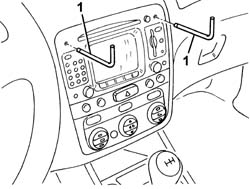
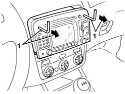
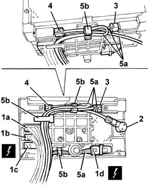
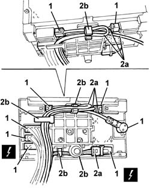

5580P12 connect panel replace
- Path
- Procedures > 55 ELECTRICAL EQUIPMENT > 5580 SPECIAL ACCESSORIES > 5580P connect panel > 5580P12 connect panel replace
- Kind
- repair procedure (removal / refitting; the operation number is the code)
- Applies to
- all engines; all production periods
- Interactive page
- https://sloeber94.github.io/elrnDB-a147/en/#/3025624
Applies to: all engines; all production periods
 Removing
Removing
 Refitting
Refitting1. Fit the tools in the special housings in Connect panel, making sure that they are correctly attached.

Applies to: all engines; all production periods
1. Extract the Connect panel pulling the tools.

Applies to: all engines; all production periods
1. Disconnect the electrical connections (1a, 1b, 1c, 1d).
 | Name | Connector |
|---|---|---|
1a | Radio |
| Name | Connector |
|---|---|---|
1b | Radio |
| Name | Connector |
|---|---|---|
1c | Radio |
| Name | Connector |
|---|---|---|
1d | Radio |
2. Disconnect the radio aerial.
3. Disconnect the GPS aerial.
4. Disconnect the GSM aerial.
5. Release the wiring (5a) from the retainers (5b).
6. Recover the Connect panel.

Applies to: all engines; all production periods
Refitting
RemovingCheck that the Connect panel is not damaged.
1. Connect the electrical connections and the aerial connections.
2. Position the wiring (2a) carefully as shown in the diagram and secure it to the retainers (2b).

Applies to: all engines; all production periods
Fit the Connect panel in its housing taking great care to avoid any interference with the cables at the rear. If there is interference, check that the cables are correctly positioned (see previous diagram).
Check the operation of the Connect panel.
Topics linked from this page (4)
- P20A Radio ( Connectors )
- P20B Radio ( Connectors )
- P20C Radio ( Connectors )
- P20D Radio ( Connectors )